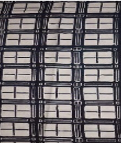

DEM - Digital Etnomatika Madura
SOAL QUIZ AYO BERLATIH
4th
grade
4th
grade
Mathematics
99%
accuracy
4.8K
plays

Hasan Basri
Now
4 preview questions
-
1. Preview Choice
Sebuah Batik Madura bermotif persegi sebagai berikut:
adalah 4 satuan luas. Berapakah luas motif Batik pada gambar disamping?jika luas

Jawaban : 96 satuan luas
Alternatif Penyelesaian :
Banyak dari gambar
adalah 24 buah, luas motif batik tersebut adalah 24 X 4 = 26. Jadi luas motif batik tersebut adalah 96 satuan luas
-
2. Preview Choice
Sepetak sawah berbentuk persegi dengan panjang sisi 10m Berapakah luas sawah tersebut?
Jawaban : 100m²
Alternatif Penyelesaian :
Luas persegi = s X s --> 10 x 10 = 100m²
Jadi, luas sawah tersebut adalah 100m² -
3. Preview Choice
Diketahui luas sebuah persegi adalah 81 cm². Berapakah ukuran sisi persegi tersebut?
Jawaban : 9 cm
Alternatif Penyelesaian :
➡ Luas persegi = S 2
➡ 81 = S 2
➡ √81 = S 2
➡ 9 = S
Jadi, luas sawah tersebut adalah 9 cm -
4. Preview Choice
Perhatikan gambar persegi di Dibawah.

Hitunglah luas persegi tersebut!
Jawaban : 16 cm
Alternatif Penyelesaian :
Luas persegi
➡ S x S
➡ 4 x 4
➡ 16
Jadi, luas Persegi tersebut adalah 16 cm